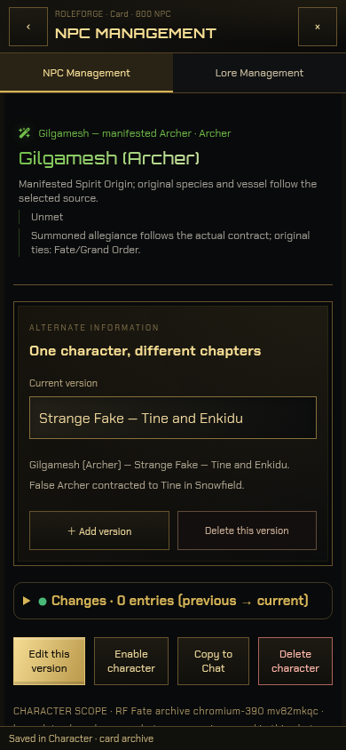
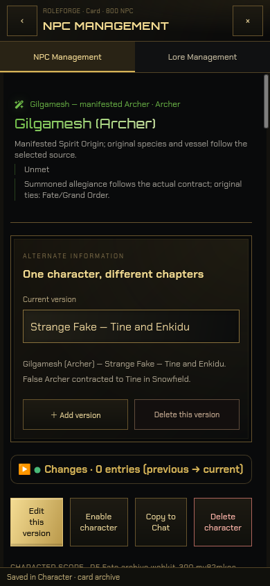
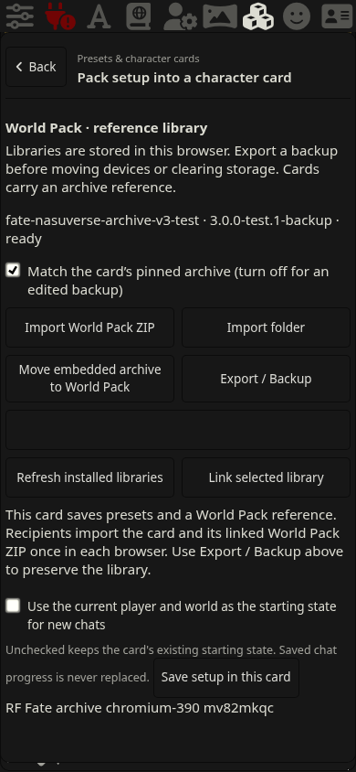
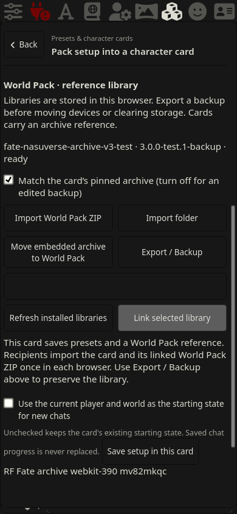
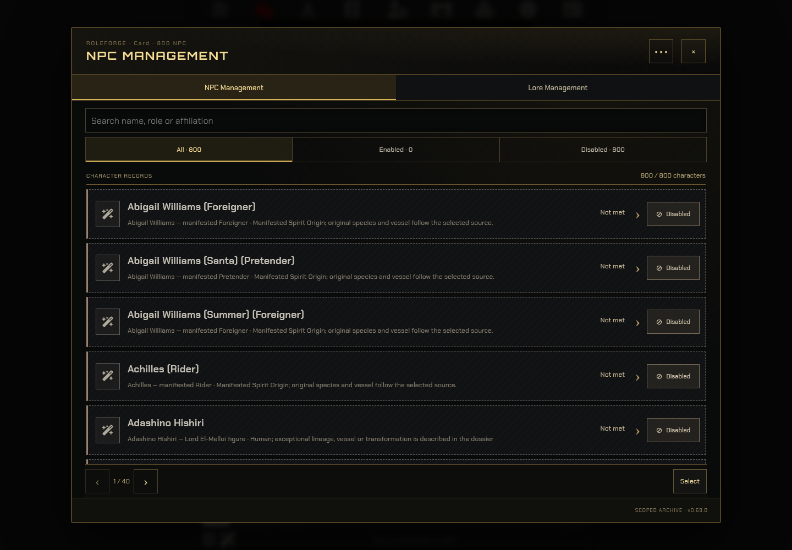

ภาพจากส่วนเสริมจริงใน SillyTavern 1.19.0 · Chromium 151 / WebKit 26.5 บน Linux หน้าจอจำลองมือถือ 390×844 และคอม 1440×1000
800 NPC · 1,771 versions · 178 world Lore · 4,329 ability supplements
รายการย่อไม่ normalize ประวัติทั้งคลัง เปิดหนึ่งตัวจึงโหลดประวัติตัวนั้น เวอร์ชันที่เลือกและสถานะปิด/ยังไม่พบคงเดิม ส่งออกครบและนำกลับเข้าเบราว์เซอร์ใหม่ได้
วิธี Import / Backup · ขอบเขตการทดสอบ · ผลทดสอบ JSON
| Browser / viewport | Cold ZIP import | เปิดรายการย่อ | เตรียม prompt · median 10 รอบ | สถานะที่ serialize |
|---|---|---|---|---|
| chromium-390 | 23.75 s | 646 ms | 36.6 ms | 6,338 B |
| webkit-390 | 21.43 s | 562 ms | 63.5 ms | 6,336 B |
เวลาทดสอบเป็นการสังเกตบนเครื่องนี้ งาน Import อยู่ใน Worker และหน้าเว็บยังมี timer ทำงานต่อเนื่อง ไม่มีการเรียก API โมเดลจริง ไม่ใช่การทดสอบบน iPhone หรือการรับประกันความเร็วของอุปกรณ์อื่น




